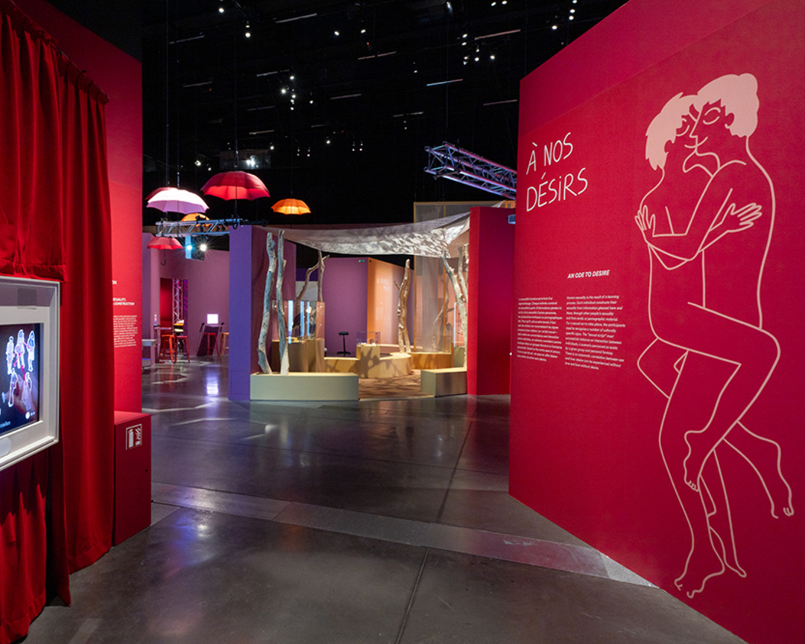
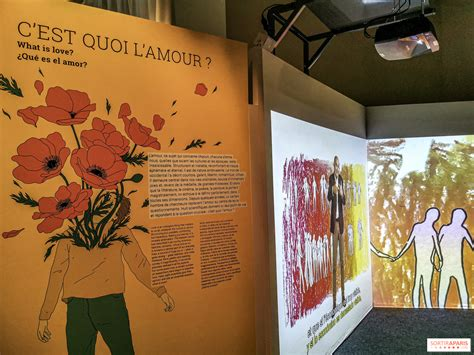
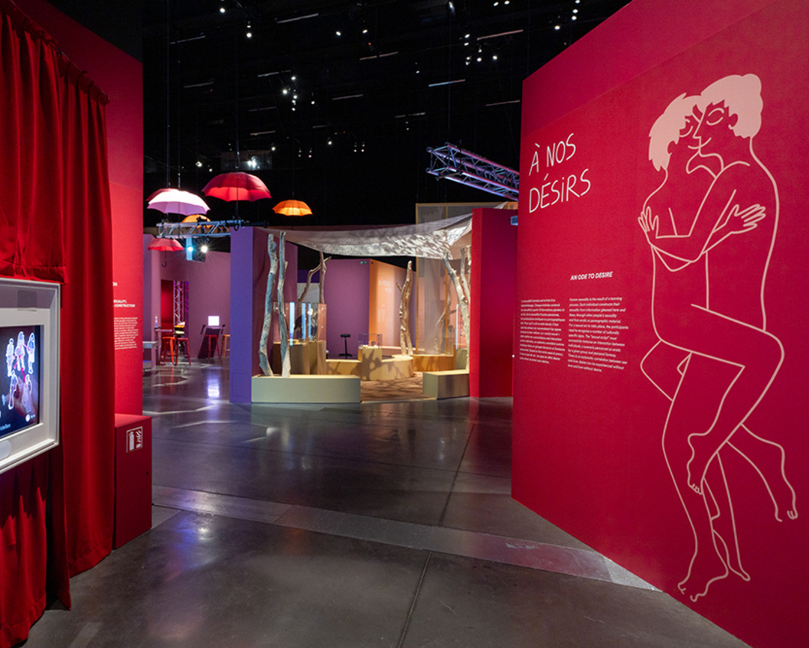
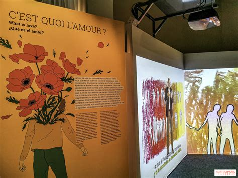
AMOUR — Une immersion dans la tendresse, la passion et la connexion. Gestes délicats, regards silencieux, couleurs chaudes : chaque œuvre bat au rythme du cœur.
Fondée en 2021 à Lyon par Éloïse Maren, artiste plasticienne et curatrice passionnée par la psychologie des émotions, la Galerie d’Âmes est née d’une idée simple et profonde : faire de l’art un langage universel du ressenti humain. Éloïse, après plusieurs années passées à exposer en Europe, a souhaité créer un lieu où chaque visiteur ne viendrait pas seulement contempler, mais ressentir. Au 7 rue de la république, la galerie s’est ainsi imposée comme un espace singulier dédié aux expériences immersives, où chaque œuvre devient une passerelle entre l’artiste et l’âme du spectateur. Aujourd’hui, la Galerie d’Âmes réunit des artistes émergents et confirmés qui explorent l’émotion sous toutes ses formes, de la plus douce à la plus tumultueuse.
 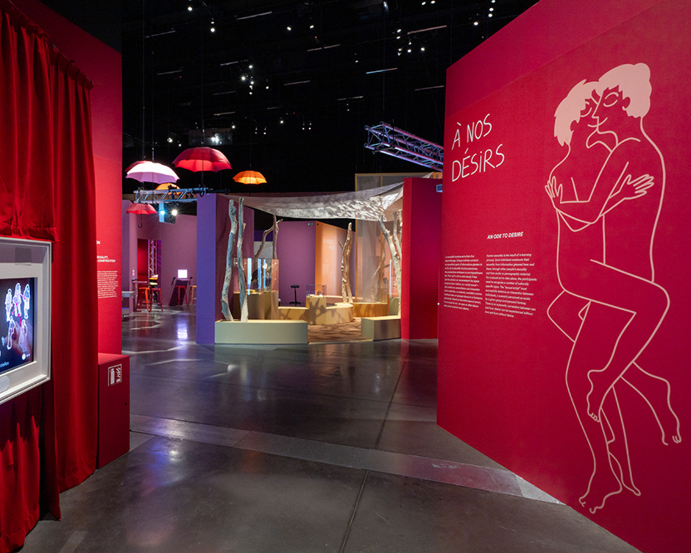
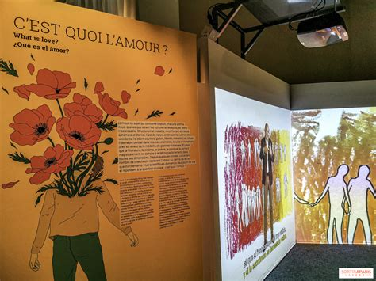
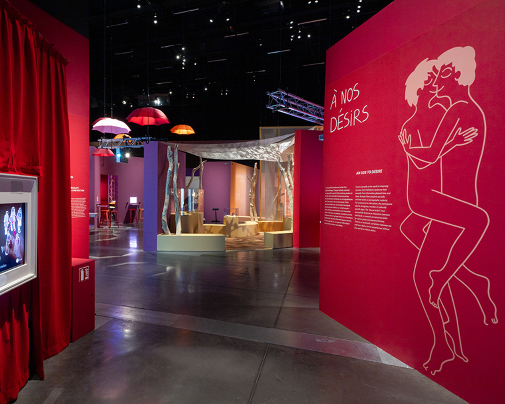
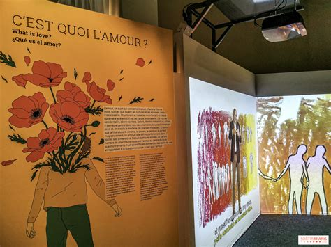
AMOUR — Une immersion dans la tendresse, la passion et la connexion. Gestes délicats, regards silencieux, couleurs chaudes : chaque œuvre bat au rythme du cœur.
 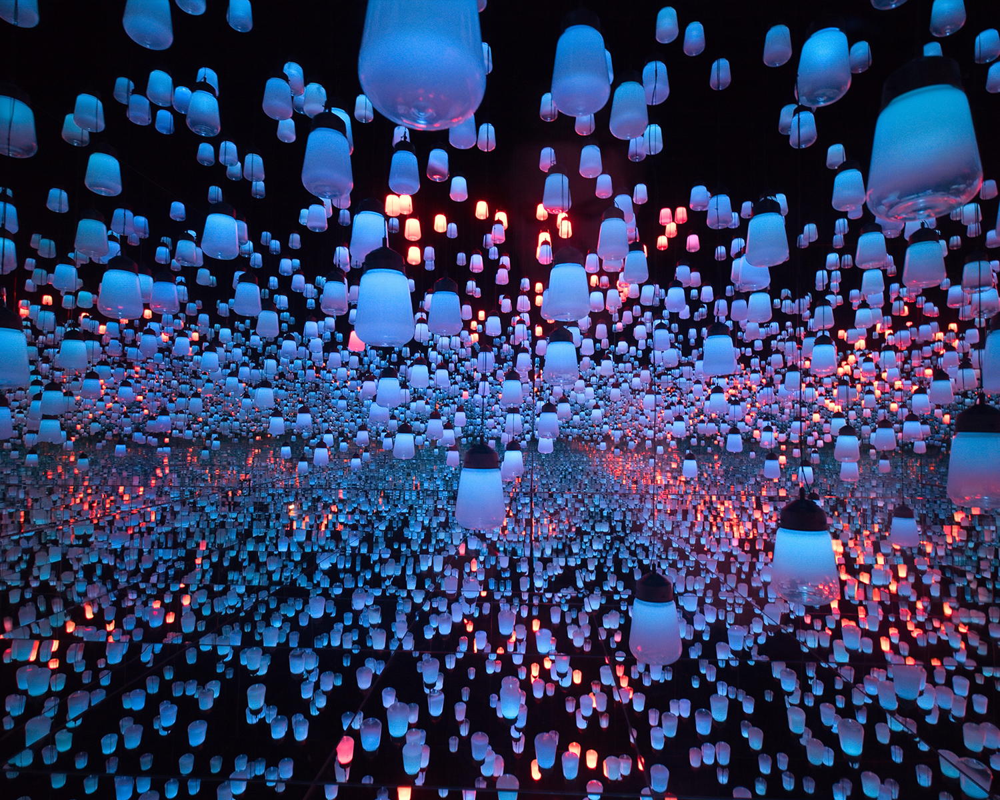
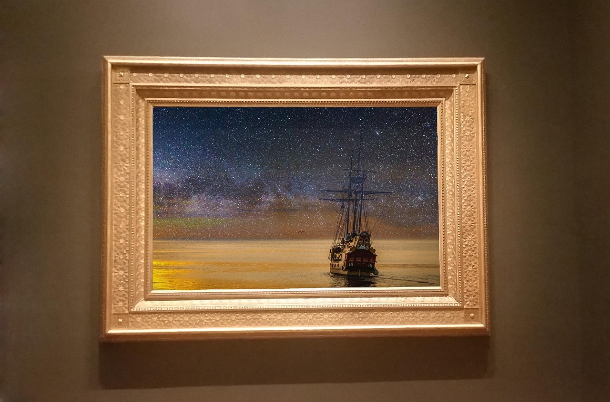
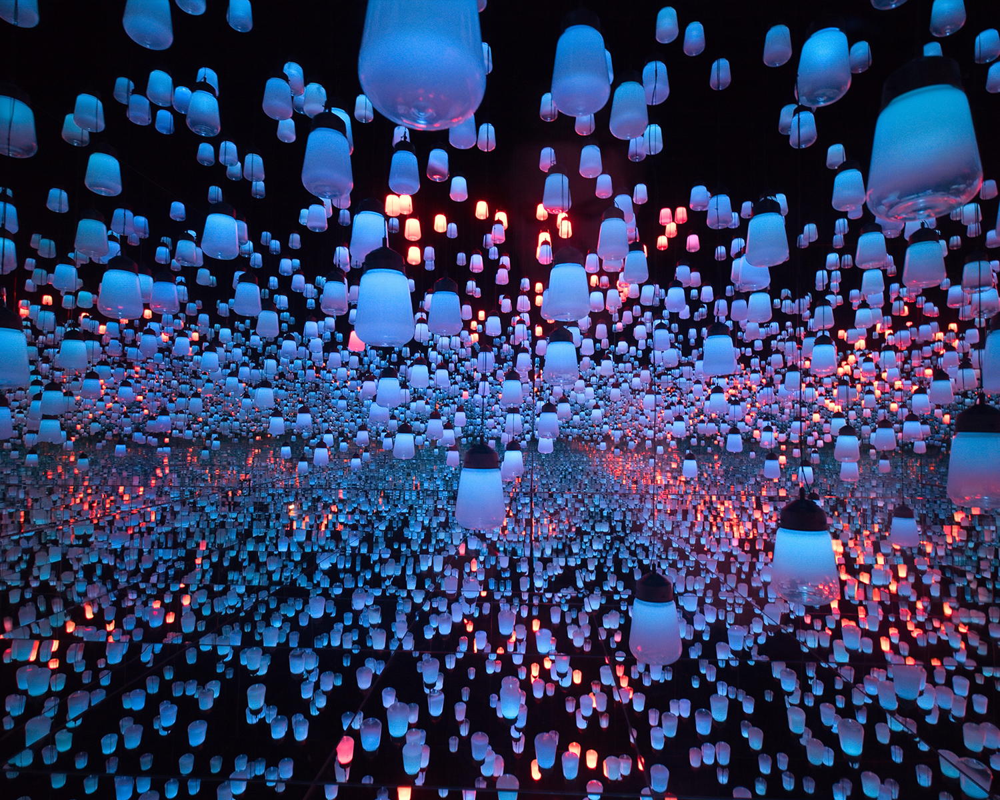
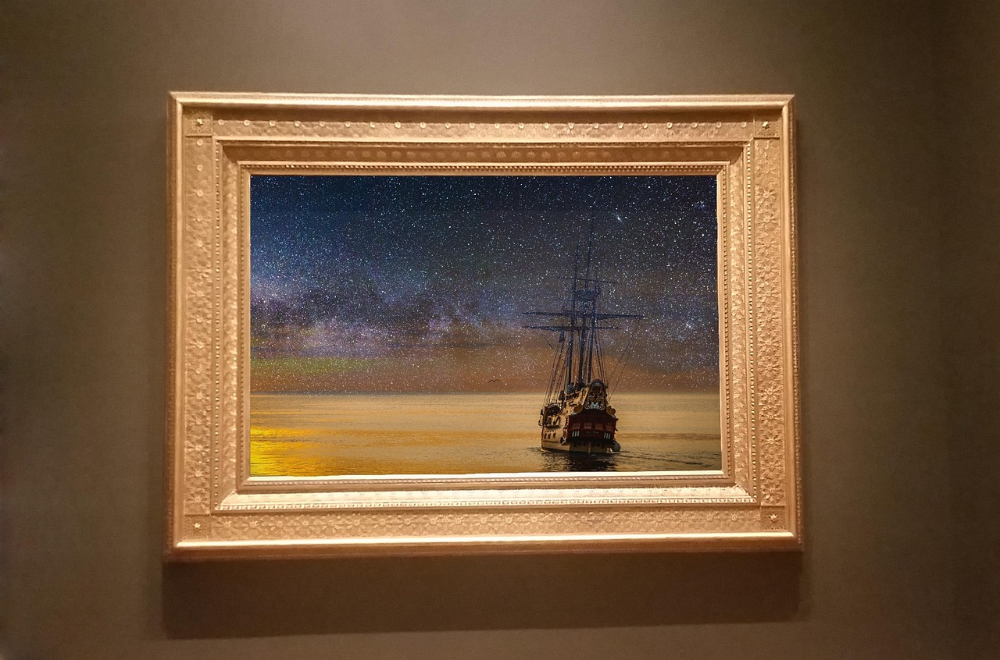
NOSTALGIE — Une salle habitée par les traces du temps. Photos, matières et silhouettes murmurent les souvenirs oubliés, entre douceur et mélancolie.
DÉSESPOIR — Lumières lacunaires, formes brisées, silences lourds. La fragilité humaine s’y révèle dans toute sa brutalité, mais laisse entrevoir une beauté résiliente.
Téléphone : 09 56 75 43 34
Mail : galeriedames@newsletter.fr